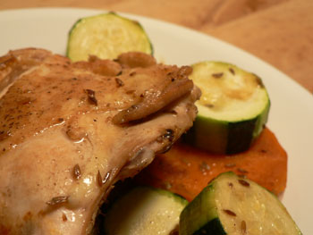

Bones
If there is one thing I’ve learned since I started cooking bone-in chicken, it’s that I was foolish to spend so many years shelling out $6.99 a pound for flavorless, boneless, skinless meat.
I don’t know what intimidated me so much about cooking meat with bones, since that’s what I grew up eating. We had perfectly moist and tender chicken several times a week in my house. There was mom’s roast chicken and Chicken with 40 Cloves of Garlic, and there was poppy’s perfect chicken cacciatora. Then I went to college, and the bone party mysteriously stopped.
Bone-in meat, especially chicken, is advantageous in the following ways: It’s less processed, and closer to the actual animal; it tastes better; it’s always cheaper; it makes for, in my opinion, a much more dramatic presentation; and it’s more forgiving. Overcook a boneless skinless breast and your dinner is ruined. Overcook a bone-in, skin-on breast, and then check it again, because when you look deep within the meat, near the bone, you’ll see that you haven’t overcooked it at all, and that it’s perfectly done.
I made a lousy dinner last night.

The vegetables were either overcooked or undercooked, and in general it wasn’t fun to eat—except for my perfect chicken, which I had braised in stock for about an hour. It was tender and satisfying, especially near the bone, where there is always a surprising amount of juicy meat to be scraped off and savored.
I know nothing about steak, but they say that the same is true about bones. Next week, I am going to roast a bone-in lamb breast. If anyone has done this before, please chime in. They say lamb is the most forgiving meat of all, so I’m not worried.
Comments
I knew that, if I took a picture, you would use it!
You food styling queen. It’s a good picture.
Sorry, you simply cannot convert me. I find a piece of meat sitting on my plate with a bone still in it to be distracting, alarming, and just kinda gross. I don’t really know what it is, but I just can’t do it.
Add a comment